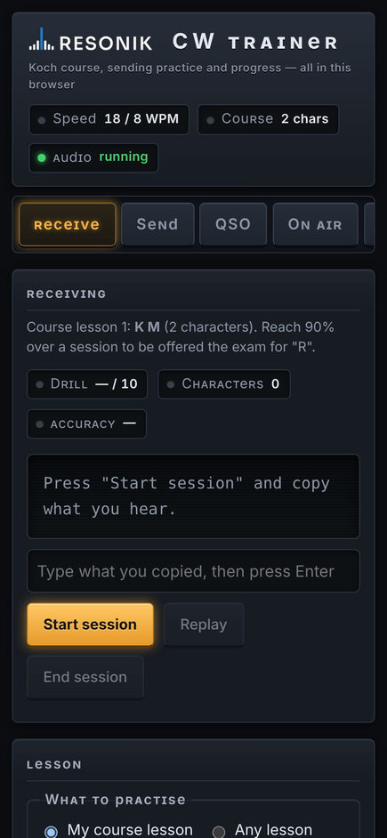
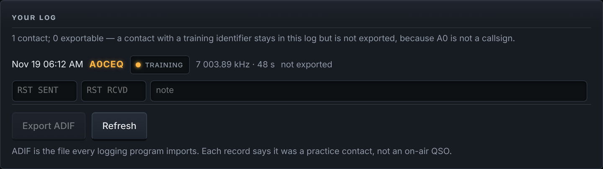
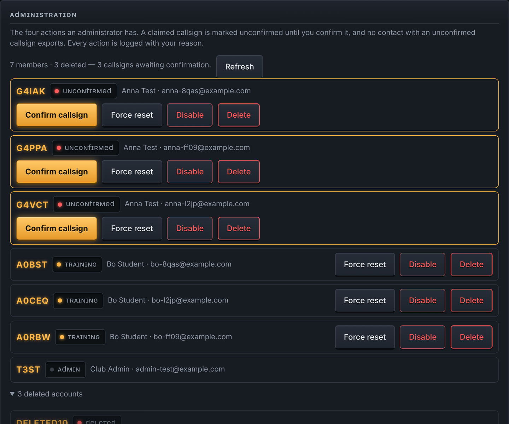

المحتويات
الفصل 7تبويب On air — العمل مع بقية الأعضاء
هذا النطاق الافتراضي. لن تختار عضوًا من قائمة. ستختار ترددًا، وكذلك يفعل كل أحد؛ وأنت تمسح النطاق ستسمع الإشارات تصل وترتفع إلى درجتها الصحيحة ثم تخبو وأنت تتجاوزها — ومعنى ذلك أنك قد تُفوّت أحدهم، تمامًا كما على الهواء. وتُجرى الاتصالات بمفتاحك أنت، مباشرةً، وتدخل في سجلّي المحطتين.

7.1تسجيل الدخول وإنشاء حساب

الاتصالات المباشرة تحتاج حسابًا: اسم (كما تحبّ أن يُسمع)، وبريد إلكتروني، وكلمة سرّ من عشرة محارف على الأقل، ونداء محطتك إن كنت تحمل واحدًا. ولا تُخزَّن كلمة سرّك أبدًا، إنما بصمة أحادية الاتجاه منها. وتُستبدَل المنسيّة عبر Forgotten password: يُرسَل رابط إلى بريدك يعمل مرة واحدة ولساعة واحدة.
ابحث في مجلّد الرسائل المزعجة قبل أن تطلب غيره. فالخادم يرسل من عنوان لم تراسله قطّ، وبعض المزوّدين يودع أول رسالة منه هناك؛ ووسمها بأنها ليست مزعجة يُبقي التالية في بريدك الوارد. والرابط يعمل مرة واحدة ولساعة واحدة، فإن انتهت صلاحية رابط أقدم فاطلب رابطًا جديدًا من Forgotten password بدل اتّباع البريد القديم.
إن لم تكن مرخَّصًا بعد
اترك خانة النداء فارغة. سيُمنح لك معرّف تدريبي يشبه نداء المحطة ليكون استقباله التمرين نفسه، لكن لا تستطيع محطة حقيقية في أي مكان أن تحمله أبدًا: يبدأ بـA0، وهي سلسلة لا يصدرها الاتحاد الدولي للاتصالات قطّ، يتبعها الحرفان الأولان من اسمك حيث يكونان متاحين — فآنا ماريا روسي تصير A0AMR. وهو موسوم بـ«training» حيثما ظهر، والاتصالات التي تُجرى به تُستبعَد من تصدير ADIF كيلا يرفع أحد تمرينًا إلى جائزة حقيقية سهوًا، ومتى نلت رخصتك أُضيف نداؤك الحقيقي إلى جانبه.
تأكيد نداء محطتك
النداء الذي تدّعيه يؤكّده مدير قبل أن يُعدّ لك. وإلى أن يحدث ذلك تستطيع التمرّن والخروج على النطاق، لكن نداءك موسوم unconfirmed حيثما ظهر ولا يكون أي اتصال بك قابلًا للتصدير — فلا يظهر أحد في سجلّ عضو آخر مشغّلًا ليس هو. أما المعرّف التدريبي فلا يحتاج تأكيدًا؛ فالتطبيق هو الذي أصدره.
إن سجّلت الدخول من جهاز ثانٍ خرج الأول من النطاق — فلا يمكن أن تكون على التردد مرتين. ولا يُشارَك شيء من حسابك مع أحد آخر، وصفحة الوِب الوحيدة المسموح لها بمحادثة الخادم هي هذه.
7.2مصابيح الحالة
صفّ الشارات في أعلى اللوحة هو سطر حالة جهازك. ولكلٍّ مصباح: كهرماني لك، وأخضر للجيّد، ورمادي للمطفأ، وأحمر للخلل.
7.3مرقاب النطاق والشلال

مرقاب النطاق هو النطاق، من 7000 إلى 7040 كيلوهرتز، مرسومًا كما يرسمه جهاز SDR: طيف في الأعلى وشلال تحته ينزلق إلى أسفل بوتيرة ثابتة. وتظهر المحطة قمةً على الطيف وأثرًا ساطعًا على الشلال ما دام مفتاحها مضغوطًا فقط، فترى الدِتّات والداءات تمرّ. فالعرض يُظهر الشيفرة وهي تُرسَل، لا حاملًا لا يتحرّك أبدًا — فالحامل المزيّف كان سيعلّمك أن تثق بالصورة قبل أذنيك. وترتفع أرضية الضجيج وتنخفض بحسب ظروف النطاق التي تختارها.
وتحمل كل محطة نداءها فوق الزجاج. والكهرماني يعني أنك تسمعها من حيث مؤشّرك؛ والحلقة الخضراء تعني أنها تنادي CQ؛ والخط الأحمر مؤشّرك والشريط الأفتح على جانبيه نطاق تمرير جهازك. والمحطات على التردد نفسه أو قربه تتشارك عنوانًا واحدًا — أقواها اثنتين بالاسم و«3+» للباقي، كأنه ازدحام — وقائمة Heard أدناه تسمّيها جميعًا.
- اسحب على الزجاج لتضبط؛ فيتبع المؤشّر إصبعك أو مؤشّر الفأرة.
- اضغط علامة محطة لتحطّ عليها بالضبط.
- ومفتاح الألوان تحت الزجاج يسمّي كل لون مستعمل.
7.4الـVFO: القراءة والمقبض والأزرار


مقبض الضبط إلى جانب القراءة هو الـVFO. أدِره بالسحب فيتبع المؤشّر زاوية إصبعك أو مؤشّرك: دورة كاملة واحدة تساوي 1 كيلوهرتز بالضبط، في مئة نقرة بمقدار 10 هرتز، وهو إحساس جهاز حديث عند خطوته الدقيقة. وعجلة الفأرة فوق المقبض تخطو به كذلك، وكذلك مفاتيح الأسهم حين يكون التركيز عليه؛ وأمسك Shift لخطوات 100 هرتز، واستعمل Page Up / Page Down لـ1 كيلوهرتز.
استعمل زرّي Next للقفز من إشارة إلى إشارة على طول المرقاب، ثم المقبض للهرتزات الأخيرة. فالمحطة تُسمع بدرجة نغمتك الجانبية حين تضبط عليها تمامًا، وأعلى حين يكون مؤشّرك أدنى، وأخفض حين يكون أعلى. وجعل المحطة تبدو صحيحة هو الضبط التام، وهي المهارة التي وُجدت هذه الواجهة لتعليمها.
7.5قائمة Heard

Heard تُعدّد ما يُسمع من حيث مؤشّرك، الأعلى صوتًا أولًا، ولكلٍّ شريط إشارة (مقياس S)، وترددها، والدرجة التي تُسمع بها عندك، ووصف بكلمات واضحة مثل «loud and clear». والمحطة الأضعف من أن تُسمع أو الأبعد عن مؤشّرك ليست هناك ببساطة، كما على الهواء. وتحت النداء ما وضعته المحطة في ملفّها — الاسم والموقع والجهاز — كما كانت سترسله في التبادل.
وسطر الوصلة تحت المحطة التي تتصل بها يخبرك بما تفعله الوصلة: كم حركة مفتاح وصلت، وكم تأخّرت، والتأخير المستعمل. ويحمرّ حين يبلغ التأخير نصف ثانية أو حين ضاعت حزم. وذاك شبكتك أو شبكتهم، بهذه الكلمات — لا مُلبَّسًا ظروفًا رديئة ولا متروكًا ليبدو إرسالًا سيّئًا.
ظروف النطاق
خيار Band conditions تحت قائمة Heard يضع أرضية الضجيج والتشويش نفسها تحت كل محطة تسمعها، عبر مرشّح الاستقبال نفسه، فيُجرى الاتصال في ضجيج لا في غرفة صامتة. وتلاشي (QSB) الإعداد المختار يركب كل محطة، وأرضية الضجيج على المرقاب تتبعه. أما المحطات نفسها فعند المستوى الذي تُظهره لها قائمة Heard.
7.6نداء CQ والإجابة عليه
لتنادي
- اضغط Find a clear spot. ينتقل المؤشّر إلى تردد لا أحد قربه.
- اضغط Call CQ here. يُسلَّح مفتاحك، وتُوسَم مناديًا (حلقة خضراء على المرقاب)، ويقرأ الزرّ «Calling CQ here».
- أرسل
CQ CQ CQ DE <ندائك> <ندائك> Kعلى مفتاحك. ويسمعه كل من على النطاق بالدرجة التي يعطيها إياه مؤشّره هو. - وحين يجيب أحدهم يتّصل الاتصال من تلقاء نفسه: يصير مصباح Contact «connecting…» ثم «connected»، وتظهر محطته في Heard وإلى جانبها End contact.
لتجيب
- ابحث عن محطة تنادي CQ — حلقة خضراء على المرقاب، أو صفّ في Heard موسوم «calling CQ». واضغط Tune to إن لم تكن عليها أصلًا.
- اضغط Answer. ينتقل مؤشّرك إليها، ويُهيَّأ الاتصال المباشر (ثوانٍ قليلة)، ويُسلَّح مفتاحك.
- أرسل
<نداؤهم> DE <ندائك> <ندائك> K، ثم اعمل معهم كما تفعل على الهواء: التقرير والاسم والموقع وما إلى ذلك (الفصل 6 فيه الشكل).
وListen here يضعك على النطاق عند ترددك الحالي دون نداء — فتسمع الجميع، ويراك الجميع على المرقاب، لكن مفتاحك يبقى غير مسلَّح. وEnd contact يغلق الاتصال؛ فيدخل السجلّين معًا في الحال. وLeave the band يُخرجك من الهواء: فلا يسمعك أحد ولا تسمع أحدًا حتى تعود.

7.7مفتاحك، والتناوب دورًا بدور

لوحة Your key يسلّحها Call CQ أو Answer. ويسمع كل من على النطاق ما ترسله؛ ويسمعه من تتصل به عبر القناة المباشرة. واللوحة تقبل المفاتيح وأزرار الفأرة والمجداف نفسها التي يقبلها تبويب Send، بنوع المفتاح والنمط الإيامبي اللذين ضبطتهما هناك.
والاتصالات دورًا بدور. فخُمس الثانية من التخزين المؤقّت فأكثر يجعل المقاطعة الحقيقية مستحيلة، ولذلك يُمسك التطبيق مفتاحك ما دامت المحطة الأخرى ترسل، ولثانيتين ونصف بعد آخر عنصر لها. وتصفرّ اللوحة إلى الكهرماني وتقول «Their over»، ويُظهر المصباح بجانبها لمن الدور. والكَبس أثناء الإمساك لا يُصدر صوتًا ولا يرسل شيئًا؛ وليس ذلك عطلًا، إنما المحطة الأخرى ما زالت ترسل. ومتى رُفع الإمساك قرأت اللوحة «Ready — key now» وقرأت الشارة «your over».

على الهاتف أو اللوح



لوحة المفتاح هي مجدافك: النصف الأيسر دِت والأيمن دا، والإبهامان يعصران تمامًا كما يفعل مجدافان. وفي نمط المفتاح البسيط تكون اللوحة كلها هي المفتاح. واللوحة نفسها تعمل في تبويبَي Send وQSO.
7.8ما الذي ينتقل بينكما، والتأخير
ليس صوتًا. إنما تُرسَل أوقات ضغط مفتاحك ورفعه، وتُولَّد النغمة من جديد في متصفّح العضو الآخر بأي درجة يفضّلها. ولا يُضغط شيء، فلا يتشوّه شيء، ويكلّف الاتصال كله بضعة بايتات في الثانية.
ويُمسك كل طرف ما يصله نحو 200 ميلي ثانية قبل أن يُسمعه، وهذا ما يتيح إعادة بناء التوقيت بالضبط ويمنح الحزم المتأخّرة وقتًا لتصل. فإن تأخّرت واحدة مع ذلك، شُغّلت لحظة وصولها — ولا تُرمى أبدًا، لأن عنصرًا ناقصًا كان سيُسمع خطأً في الإرسال — ويُكبَّر التأخير لتصل التي خلفها في موعدها. وبين الأدوار ينكمش التأخير ثانيةً إن استطاع. وعلى وصلة جيدة يبقى عند 200 ميلي ثانية؛ وعلى هاتف على شبكة لاسلكية قد يستقرّ عند نصف ثانية فأكثر، ويكون الدور الأول من الاتصال خشنًا وهو يتعلّم.
على وصلة سلكية، وعلى شبكة المنزل اللاسلكية، وبين بلدين، تصل العناصر كما أُرسلت تمامًا — بلا أي خطأ. أما على شبكة فندق وعلى الهاتف فكثيرًا ما لا تصل في موعدها، ويلتفّ التطبيق على ذلك كما وُصف. وسطر الوصلة في Heard يريك في أي الحالتين أنت. ولا ينبغي أن تتمرّن أبدًا على بصمة أفسدتها الوصلة في الطريق.
الهواتف وقفل الشاشة وإعادة الاتصال
تُسقط الهواتف الاتصال بالخادم حين تُقفل الشاشة أو حين تنتقل إلى تطبيق آخر. وحين تعود يعيد التطبيق الاتصال في الحال، ويعيدك إلى ترددك، وينهي أي اتصال كنت فيه — وقد أُخبرت المحطة الأخرى بأنك غادرت — فما عليك إلا أن تنادي أو تجيب من جديد. وإن قال مصباح Band «reconnecting» فانتظر «on the band» قبل الكَبس. ويفحص التطبيق الوصلة كل خمس عشرة ثانية ويعيد الاتصال من تلقاء نفسه إن صمت الخادم، فالمحطة التي غادرت حقًّا تختفي من نطاق الجميع خلال نصف دقيقة تقريبًا.
7.9سجلّك، وRST، وتصدير ADIF


يحصل الطرفان على الاتصال في سجلّيهما تلقائيًّا لحظة انتهائه؛ وYour log يُعدّدها، الأحدث أولًا. ولكل صفّ ثلاثة صناديق للتبادل: RST الذي أرسلت، وRST الذي استلمت، وملاحظة. اكتب 5NN أو 599، وكلاهما مقبول؛ وتُحفظ القيمة حين تغادر الصندوق. وهذه روايتك أنت عن الاتصال؛ والمحطة الأخرى تحتفظ بروايتها.
وExport ADIF ينزّل ملفًّا يستورده كل برنامج تسجيل — سجلّ لكل اتصال فيه نداء المحطة الأخرى، والتاريخ والوقت بتوقيت UTC، والتردد، والنطاق، والنمط، وRST والملاحظة إن كتبتهما. وRefresh يعيد تحميل القائمة من الخادم.
أمران مقصودان. الاتصال بمعرّف تدريبي يبقى في سجلّك ولا يُصدَّر أبدًا، لأن A0 ليس نداء محطة ولا ينبغي أن يُسلَّم إلى برنامج تسجيل على أنه كذلك. وكل سجلّ مُصدَّر يقول في تعليقه إنه اتصال تمرين على هذا النطاق الافتراضي لا QSO على الهواء، فالسجلّ المدموج بسجلّك الحقيقي يظلّ صادقًا في كل صفّ. وكذلك تُحجَب الاتصالات بنداء غير مؤكَّد حتى يُؤكَّد.
7.10الإبلاغ عن مشكلة مع محطة أخرى
يستطيع المدير مراقبة اتصال جارٍ، ويستطيع كتم عضو أو إخراجه. ولك أن تبلّغ عن إساءة من داخل الاتصال دون مغادرته أولًا: فـReport في صفّ المحطة يسألك عمّا جرى ويرسله إلى المديرين ومعه نصّ ما أرسلته تلك المحطة، مفكوك الترميز بمتصفّحك كما كانت الآلة ستستقبله. ولا يُضمَّن شيء ممّا أرسلتَه أنت، ولا يُحفَظ نصّ ولا يُعرَض في أي وقت آخر — فالاستقبال بالأذن هو المقصود.
وإن كان مدير قد كتمك قالت ذلك لوحة You ولوحة المفتاح: «You are muted and cannot transmit at the moment.» ويدوم الكتم أربعًا وعشرين ساعة ما لم يرفعه مدير قبل ذلك.
7.11للمديرين


العضو الذي دوره مدير يرى تبويبًا زائدًا، ADMIN، في آخر شريط التبويبات. يظهر حين يسجّل مثل هذا العضو دخوله في تبويب On air ويختفي حين يخرج؛ ولا يراه أي عضو آخر أبدًا. وهو يحمل إجراءات المدير الأربعة ولا شيء غيرها:
والسطر فوق القائمة يعدّ الأعضاء لا الصفوف. فالحساب المحذوف ليس عضوًا: يفرّغ الخادم الصفّ ويُبقيه ليبقى لسجلّ الإشراف ولاتصالات سجلّات الأعضاء الآخرين ما تشير إليه. فثلاثة أعضاء وحساب محذوف واحد تُقرأ «3 members · 1 deleted»، والمحذوفة مطويّة تحت القائمة، تُفتح إن أردت رؤيتها.
كل إجراء يطلب سببًا ويُسجَّل معه. والحذف لا يُنقض.
إخفاء التبويب عن الجميع يرتّب الواجهة ولا يحمي شيئًا. فالحماية هي الخادم، الذي يرفض كل طلب إداري من حساب ليس حساب مدير، سواء أكان التبويب على الشاشة أم لم يكن.